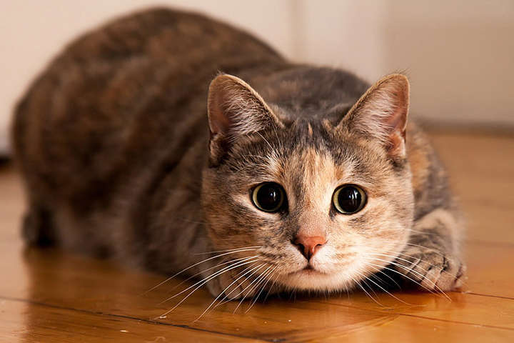

Кішки дуже симпатичні і граціозні тварини.
Ці тварини пересуваються на чотирьох лапах, добре стрибають і вміють залазити на дерева.
Більшість кішок покриті хутром і мають довгий хвіст.
Ці тварини можуть бути дикими або домашніми.
Кішка – популярний домашній вихованець. Його розміри дозволяють тримати кішку в будинку або квартирі.
Він не вимагає особливих умов утримання, але їй необхідно мати достатній простір для ігор, правильно харчуватися і жити в чистоті.
Кішки – хижаки. Це означає, що в природі вони добувають їжу полюванням і харчуються м’ясом інших тварин.
Кішки, які живуть на вулиці або в селі, ловлять мишей, інших гризунів, невеликих пташок.
Домашніх кішок годують господарі, але вони теж не проти пополювати за сонячним зайчиком чи горобцем, що сидить на підвіконні.
У кішки гострі кігті і зуби. Нападаючи на свою жертву, кішка тримає її передніми лапами і зубами і атакує кігтями задніх лап.
Для спілкування кішки використовують голос. Вони здатні нявкати, гарчати і муркотіти. Шерсть кішки може бути довгою і пухнастою, а може бити короткою і досить жорсткою. У будь-якому випадку, кішка щодня доглядає за нею. Вона вилизує її своїм шорстким язиком. Це очищає шерсть і одночасно розчісує її. Довгошерстим кішкам потрібна допомога господарів в догляді за їх шубкою.
 Колір шерсті кішки може бути дуже різноманітним. Бувають зовсім білі кішки, чорні, бежеві, руді, коричневі, сірі. Часто зустрічаються кішки зі змішаним забарвленням у вигляді цяток або смужок. Триколірні, біло-чорно-коричневі кішки вважаються щасливими, а ось повністю чорні кішки за народними повір’ями приносять біду. Деякі кішки і зовсім позбавлені шерсті. Колір їхньої шкіри схожий на колір шкіри людини. Такі кішки вимагають особливого догляду, так як їх чутлива шкіра часто страждає від сухості, роздратування, а в літній час покривається справжньою засмагою. Хвіст кішки відіграє величезну роль в її житті. Наприклад, за допомогою хвоста вона висловлює свої емоції: якщо кішка б’є хвостом об підлогу – значить вона нервує або злиться. Хвіст допомагає кішці тримати рівновагу при стрибках або на гілках дерев. У кішок відмінний зір, вони добре бачать навіть в темряві, а ось нюх не такий хороший як у собак. Іноді кішці потрібно уткнутися носом в предмет, щоб відчути його запах. Досить часто кішки викликають алергію. Люди, які страждають алергією на котів, не можуть брати їх на руки і навіть перебувати в одному приміщенні з кішкою. У таких людей від кішок починається сильний нежить, течуть сльози і іноді з’являється висип. Любителі кішок вивели дуже багато порід цих тварин. За бажанням можна завести пухнасту або лису кішку, кішку екзотичного забарвлення, кішку з короткими лапками або безхвосту, кішку з кучерявою шерстю або висячими вушками.
Вгору